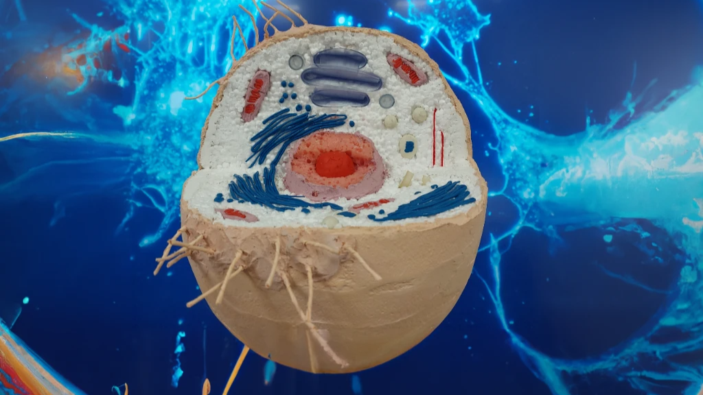

Modelarea reală a celulei
Cea mai inovativă celulă- Upcycling
Liceul Teoretic
Petre Ștefănucă
Modelarea reală a celulei
Cea mai inovativă celulă- Upcycling
Upcycling-ul este procesul de transformare a unui produs sau a unui material vechi, uzat sau nefolosit într-un alt obiect cu o funcționalitate sau o valoare superioară. În acest sens, este o metodă sustenabilă de a reduce impactul asupra mediului, prin evitarea producției de noi obiecte și reducerea cantității de deșeuri. Un exemplu de upcycling este reutilizarea diferitelor materiale în vederea creării unei celule biologice, un obiect inedit și plin de valoare, dar și util pentru educația copiilor sau ca element decorativ într-un spațiu.
Pentru a crea această celulă biologică, s-au folosit o varietate de materiale, inclusiv ghips, plastilina, plastic, burete, hârtie și polistiren. Ghipsul a fost folosit pentru a crea baza celulei și pentru a-i oferi stabilitate, în timp ce plastilina a fost utilizată pentru a modela organele celulare, cum ar fi nucleul și mitocondria. Plasticul și polistirenul au fost folosite pentru a crea structuri mai complexe, cum ar fi membranele celulare, în timp ce buretele și hârtia au fost folosite pentru a oferi textură și adâncime celulei.
Prin combinarea acestor materiale diferite, s-a reușit crearea unui obiect unic, cu o varietate de texturi și culori, și cu un impact vizual puternic. De asemenea, această celulă biologică reprezintă un exemplu clar de cum upcycling-ul poate fi folosit în scop educațional, prin prezentarea unor concepte științifice complexe într-un mod interactiv și vizual. În concluzie, upcycling-ul este o metodă importantă de a reduce deșeurile și de a promova sustenabilitatea, și această celulă biologică reprezintă un exemplu concret de cum această metodă poate fi aplicată în mod creativ și util.